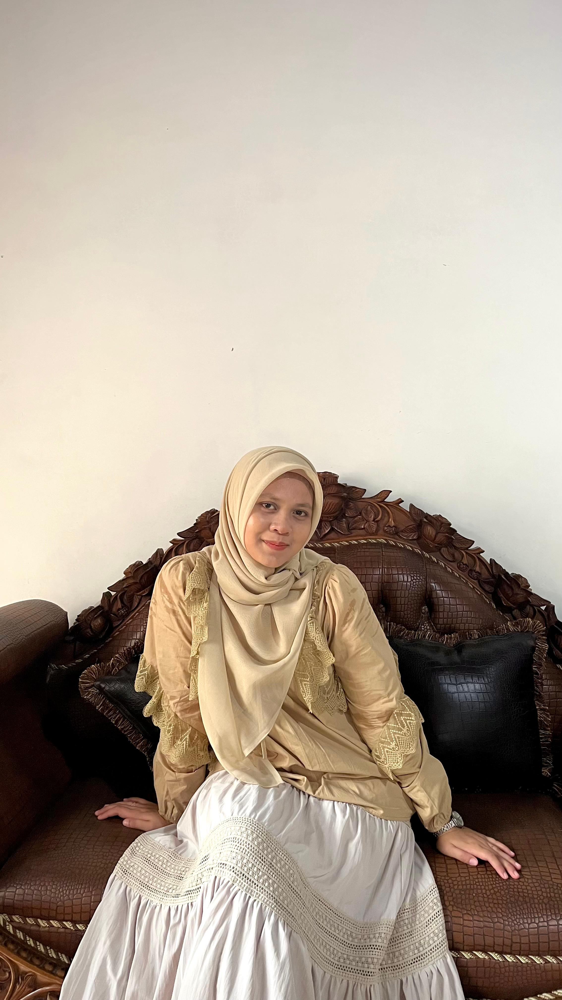
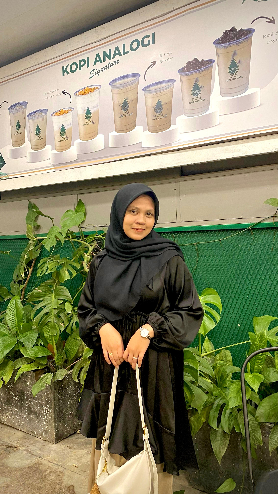
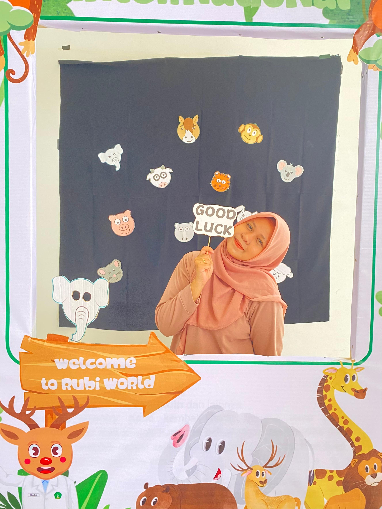
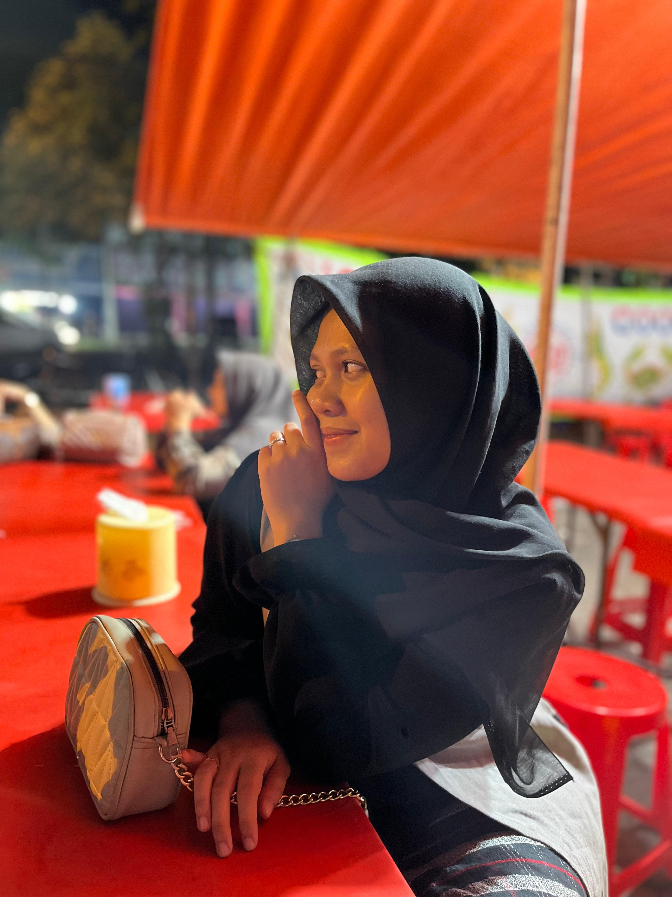
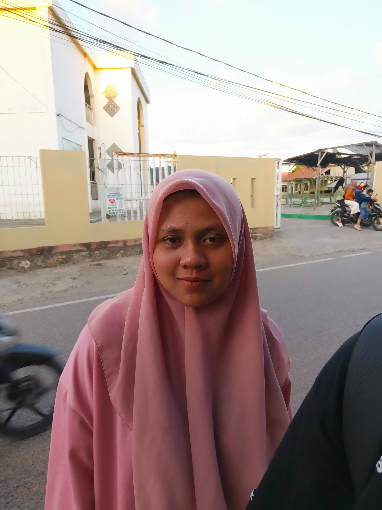
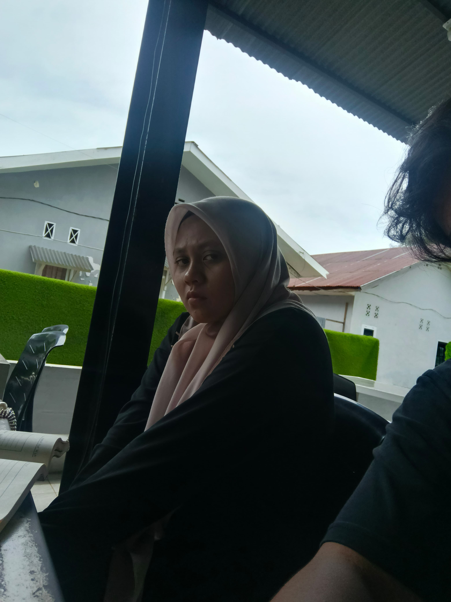

Hidupin Musik Biar Rileks
Hahahahaha Kalau ada foto random biarin jangan marah yaaa kan ke sayang aku. Mau ke foto gimana pun ke tetap cantik di mata aku jangan insecure sama diri ke sendiri yaa aku selalu ada yang ngedukung ke selagi aku masih ada selagi ke belum di ijab qabulin orang lain atau sebelum ke sama orang lain aku akan selalu support ke. Tetap semangat yaa, Jangan Pernah Mengeluh Apapun itu kalau ke mau cerita apa aja aku selalu siap mendengarkan apapun itu sekecil apapun itu selagi ke masih terbuka aku sangat senang. Sebelum ituu aku mau ucapin SELAMAT ULANG TAHUNN KE 19 YAA SAYAANGG semoga kee sehatt selaluuu, rezekinya makin banyakkk, sama aku terussss yaaaa hahahaa walaupun aku banyak kurangnya seenggaknya aku berusaha sebaik mungkin untuk ke.
Jauh dari wanita yang aku temui salah satu alasan aku suka kali sama ke adalah effort ke besar banget dan perhatian ke belum pernah aku dapetin dari cewe-cewe lain setelah mamak aku. Dari cara ke support aku dari ke perhatiin aku, aku selalu sangat senang. Dari hubungan aku sebelumnya mungkin hubungan aku sama ke yang kayaknya gamau aku akhirin sampe akhir hidup aku. Kalau suatu saat nanti bukan aku orang yang disampingmu, setidaknya aku sangat bersyukur kita pernah ditemukan, aku ga akan lupa kenangan yang kita bangun dari sekarang. Aku selalu berfikir kenapa ke mau sama aku yang banyak kurangnya dibandingin cowo lain? dan juga dari segi fisik,materi, dan juga ide pikir aku kurang namun aku ga tau kenapa ke mau sama aku. Aku berharap hubungan kita ini ga akan berakhir sampai ke temuin jodoh ke atau aku yang sudah tiada. Aku harap nama yang tertulis di langit itu nama aku dengan nama ke. Karna aku dipertemukan sama ke ketika aku memang setidak percaya itu sama cewe cewe zaman sekarang. Tapi karna ada ke aku jadi yakin bahwa ada juga cewe yang berbeda dengan cewe lainnya. Ke jangan pernah khawatir aku bakalan sama orang lain, Aku bakalan tetap sama ke selagi ke belum sama orang lain. Aku pergi kalau ke emang ga mau lagi sama aku mungkin ke udh sama orang lain hahaha. Maafin aku ya, mungkin aku belum bisa jadi yang ke harapkan, mungkin aku terlalu banyak kurangnya daripada lebihnya. Maafin juga ya aku yang terlalu cemburu, terlalu posesif, terlalu menekankan ke, kalau ke merasa tertekan, tolong ke bilang sama aku supaya aku bisa menyesuaikan apa yang buat ke tertekan.
Aku mau nyimpen foto kita disini semuanyaa, kalaupun kita gak di takdirkan bersama setidaknya foto ini abadi selamanya. Sebelum itu aku berterima kasih banyak bangett kalau ke itu udah hadir di hidup aku yaaaa. Tetap semangatt yaa wanita ambiss, semangat kuliahnya yaa, Dengerin kata orang-lain kalau itu baik kalau itu untuk menjatuhkan ke gausah di dengerin. Kalau ke butuh support aku selalu ada disini okeee.